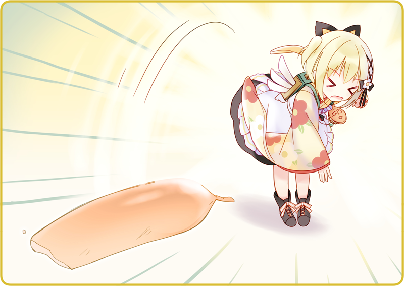

「これは野良犬の仕業だね」
黒猫亭の裏手には、据え付けられた木製のゴミ箱。
地面にはバナナの皮やら、卵の殻やら、生ゴミが散乱している。
半開きになった蓋の隙間からは、でろりと新聞紙がはみ出していた。
「蓋がちゃんと閉まってなかったのかも」
確認してみると、すこし蝶番がさび付いているようで、軋んだ音を立てた。
僅かに隙間が空いていて、そこに鼻先を突っ込まれたのだろう。
灰桜「ごめんなさい、昨日のごみ出し、わたしが当番だったので……」
申し訳なさそうにしている灰桜。
「いいさ、ちゃちゃっと掃除しちゃおう」
灰桜「わたし、掃除道具取ってきますっ」
ぱっと袖を翻して、フロアへと戻っていく。
その間に、拾えるごみは拾っておこうと腰をかがめた。
どん、と小さな衝撃。
月下の体がぶつかってきたのだ。
指差す先には、荒れた毛並みの中型犬。
通路の奥、遠巻きにこちらをじっと見つめている。
「ああ、こいつかぁ」
どうやら犯人の登場らしい。
「しっしっ、キミのご飯じゃないよ」
手を振ってみるが、未練があるらしくびくりともしない。
「月下、追い払ってきてくれない？」
黒いリボンを揺らして、丸い瞳をこちらに向ける。
ガラス玉のような瞳は、明らかに動揺していた。
「えっと……」
『わんわんわんわん！』
めちゃくちゃ吠えられた。
一軒ほど進んだ月下だが、たちまち引き返してきた。
「月下、これ」
かじりかけのソーセージを手渡す。
「お腹減ってるんだろう、投げてあげなよ」
むんずと掴むと、狙いを定める。

ぽいと投げると、たちまち野良犬は飛んでいった。
遠くでがつがつとソーセージにかぶりついている。
「今度から、ゴミ箱には南京錠でもかけておこう」
いつものツンとした顔で受け応える月下。
灰桜「お待たせしました～」
ちょうど灰桜が、箒とちりとり、火ばさみを持ってきてくれた。
興味を持ったのだろうか、後ろから黒猫のシャノが付いてくる。
月下が抱き上げると、フロアに戻している。
なんとも微笑ましい光景だった。
灰桜「どうして笑っているのですか？」
「いや、猫は怖くないんだと思ってさ」
灰桜「みゅ？」
「掃除しちゃおっか」
戻ってきた月下と手分けして、ゴミ箱の周辺を掃除する。
野良犬は満足したようで、どこかに行ってしまったようだ。
掃除が終わったら、仕込みを始めなくちゃな。

 「普段荒らされることはないであります」
「普段荒らされることはないであります」